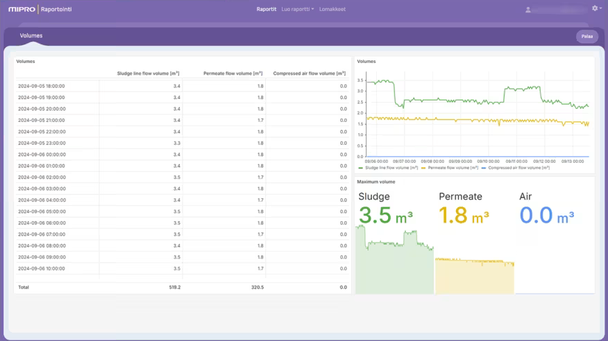

Software developer at Hamina Wireless (Jan 2025 – )
Hamina Wireless (https://www.hamina.com/) is a Finnish technology company that develops design and analysis tools
for wireless networks. I work in the Network Planner product development
team, where I develop and maintain features for the Network Planner
application. In my work, I use a variety of different web and 3D
technologies on a daily basis.
Software developer at Mipro (Jun 2022 – Feb 2025)

Mipro (https://www.mipro.fi) is a Finnish
consulting company that specializes in rail traffic and industrial systems.
I worked in the Mipro Core Reporting team, developing an automated reporting
system for customers.
- I developed a full-stack web application with React and TypeScript.
-
I created an e2e testing system for the application using Playwright and
Jenkins.
-
I developed and maintained the web infrastructure using Terraform and
Kubernetes.
-
I spent one summer as a Scrum Master in our team and was involved in
improving the development process of our team.
-
I worked at the customer interface, getting direct feedback and
suggestions from customers.
Employment certificate
Teaching assistant at Aalto University (Jun 2023 – Dec 2023)
I have worked as a teaching assistant in the following courses:
-
Data Structures and Algorithms (Aug 2023 - Dec 2023)
-
I helped students in exercise sessions in Finnish, Swedish and English
-
Programming Parallel Computers, Course development (Jun 2023 - Aug 2023)
- I developed the course's platform using Python and Flask
- I tested and assessed the scalability of the course platform
System administrator at Päivölä (May 2021 – )
I occasionally work voluntarily as a system administrator at Päivölä School
of Mathematics (https://paivola.fi). My
work has included maintaining the school's cloud infrastructure with Ansible
and managing user accounts with LDAP and Keycloak. I have also installed
physical hardware such as network switches and access points and developed
the schools internal website using React and Typescript.
Developer at PSIL (Aug 2020 – Jun 2022)

Päivölä Student Innovation Lab (https://psil.fi) is a workplace for the students of Päivölä School of Mathematics. I have
participated in the following projects in PSIL:
-
Chess camera project (Aug 2020 - May 2021)
-
I implemented sending of data from web camera client to server by
using the WebSocket computer communications protocol in Java
-
I participated in the implementation of a back-end server application
that stored chess games that were sent by web camera clients using
Javascript
-
I made a debugging window for modifying the settings of the web camera
client using Java
-
"Perintätoimisto" (Collection agency) project (Feb 2021 - Jan 2022)
-
I made a web scraping script with python that collected the contact
information of certain companies
-
I designed and programmed a website with React and TypeScript for
maintaining a PostgreSQL database of clients and customers
-
WebDev team (Aug 2021 - Jun 2022)
-
I managed a team of 7 people, organized daily meetings and was in
charge of handing out tasks to other team members
-
I instructed and taught other team members how to build full-stack
applications using React, TypeScript, NodeJS and ExpressJS
-
SimAnalytics Factory Harmonizer (Jan 2022 - Jun 2022)
-
I, along with 2 other developers from PSIL, developed the UI of
SimAnalytics' Factory Harmonizer project using React and JavaScript
Employment certificate
Summer trainee at Loupedeck (Jun 2021 – Aug 2021)

I participated in a software development project in Loupedeck (https://loupedeck.com). The company was again developing a new version of the UI for their new
editing console “Live” and I was part of an international UI development
team.
-
I used React with Typescript, Redux and RxJS to develop different UI
components
- I studied and fixed multiple bugs and issues in the UI
- I participated in daily meetings
The image highlights parts of the UI that I worked on.
Employment certificate
Summer trainee at Loupedeck (Jun 2020 – Jul 2020)

I participated in a software development project in Loupedeck (https://loupedeck.com). The company was developing a new version of the UI for their editing
console “CT” and I was part of an international UI development team.
-
I used React with Typescript, Redux and RxJS to develop different UI
components
- I participated in daily meetings
-
I received positive feedback about the quality and effectiveness of my
work
The image highlights parts of the UI that I worked on.
Employment certificate
Trainee at GE Healthcare (Oct 2019)
As part of the Finnish familiarization with working life -program
(TET-harjoittelu) I was working for two weeks at GE Healthcare. I worked in
an international CI/testing team of a wireless patient monitor product
development program.
- Suoritin semiautomaattisia testejä ja kirjoitien tstitulokset ylös.
-
Kirjoitin python-skriptin, joka jäsentää testitulokset automaattisesti.
{kind=link}